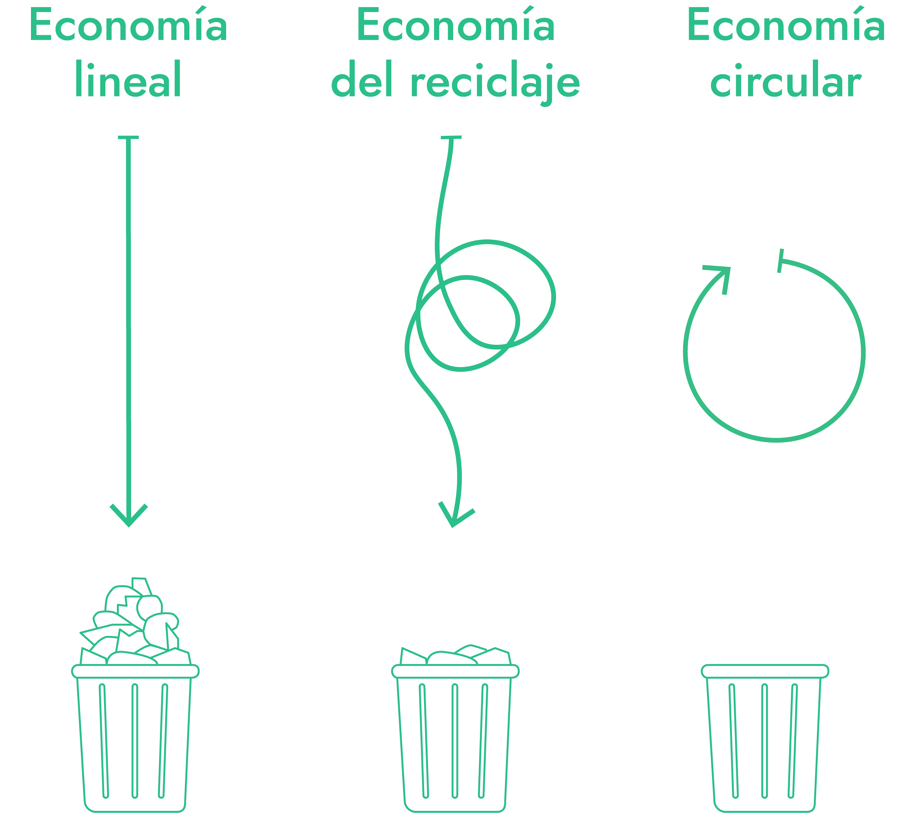

Jornadas del 3-oct al 6-oct
Economía circular
La economía circular ofrece un modelo de crecimiento que favorece el equilibrio económico, ambiental y social y, desde el Ayto.de Oz, queremos potenciar este concepto. Os esperamos del 3 de octubre al 6 de octubre en el espacio cultural "La Casa de Dorothy" situado en la calle Ladrillos Amarillos nº2 para que disfrutéis de estas jornadas.
DE RESIDUOS A NUEVOS PRODUCTOS